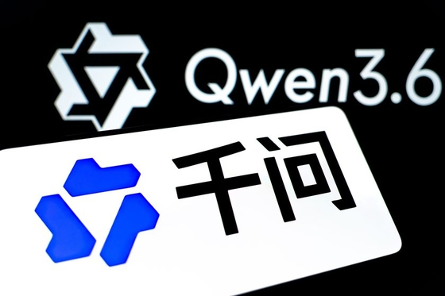

■ 说透 / SHUOTOU · 知览
SUBTITLE
同一周，两家公司做了方向完全相反的事。一家在收紧订阅，另一家把接近同级别的模型挂上去，标价零元。这不是谁更强的故事，是两种赚钱方式的结构性对决。

3月31号，阿里把Qwen 3.6 Plus挂上了OpenRouter，免费的，谁都能用。两天之后的4月2号，Anthropic宣布收紧Claude的订阅体系和API调用上限，把闸门又拧紧了一圈。
你把这两件事放到一条时间线上看，就像两个人站在同一扇门的两边，一个在往里推，一个在往外拉。同一个星期，方向完全相反。
但这不是巧合，也不是什么商战阴谋论。你想啊，阿里云上个季度的收入是433亿人民币，同比涨了36%，AI相关产品的收入已经连续十个季度三位数增长了，云业务是阿里集团现在增长最猛的那条线。而Anthropic呢，2026年2月的年化收入刚到140亿美元，其中七成到七成半来自API按量付费，剩下的是企业订阅和Claude Code的收入——Claude Code上线九个月就跑出了25亿美元的年化收入，这个速度是真的猛。
但你仔细看就会发现，两家公司的钱来的地方完全不一样，一个是云服务的附属品，一个是模型本身就是商品。我觉得这个区别，决定了接下来所有事情的走向。
Qwen 3.6 Plus 产品界面
先说Qwen 3.6 Plus的数字，因为数字本身就很有意思。在SWE-bench Verified（软件工程基准测试）这个测代码工程能力的榜单上，它跑出了78.8%，Claude Opus 4.6是80.8%，差了2分，不算大。但在Terminal-Bench 2.0（终端操作基准）上，测的是真实终端操作和自动化任务，Qwen反过来了，61.6对59.3，反超了2.3分。
DATA — SWE-bench Verified / Terminal-Bench 2.0 对比
78.8% — Qwen 3.6 Plus（SWE-bench Verified）
80.8% — Claude Opus 4.6（SWE-bench Verified）
61.6 — Qwen 3.6 Plus（Terminal-Bench 2.0）
59.3 — Claude Opus 4.6（Terminal-Bench 2.0）
说白了，两家在代码能力上已经咬得很紧了，不是一个在天上一个在地下那种差距。而且Qwen这次直接给了1M token的原生上下文窗口，支持多模态，还有原生的agent工作流——你可以把它理解成，模型自己就能拆任务、调工具、跑完整个流程，不需要你在外面再套一层框架。
最关键的是，它兼容OpenClaw、Claude Code、Cline这些主流的第三方编程工具链。就是说，你原来用Claude Code干活的那套东西，开发环境不用动，把底下的模型换成Qwen，理论上也能跑。这个兼容性不是偶然的，是阿里刻意做的。
那问题来了，阿里为啥要把这种级别的东西免费送出去？讲真，我看到这个消息的第一反应也是觉得不太真实，模型训练的成本摆在那儿，不是小数目。
答案藏在两家公司的账本结构里。
Anthropic的收入模型，说到底就是一个SaaS订阅的变体。你用Claude，要么按月交100美元订Max计划，要么按token调API，Opus 4.6的API价格是输入5美元、输出25美元每百万token。它没有云服务，没有电商，没有芯片业务，模型本身就是Anthropic的产品，也是它唯一的产品，所有的收入都系在这一根绳子上。我之前一直觉得这是Anthropic的优势——专注嘛，但现在回头看，这也是它最大的软肋。
大家对Anthropic这家公司的情感，其实是很复杂的，一方面会觉得它专横霸道，但另一方面，大家又很佩服人家的技术底子。
— 差评，Claude Code源码泄漏事件
阿里那边呢，完全不是这个打法。Qwen 3.6 Plus用的是Apache 2.0协议开源，你下载、部署、商用，随便来。但阿里不靠卖模型赚钱啊，它靠的是你用了模型之后，把推理、训练、存储这些活放到阿里云上跑。模型是鱼饵，云服务才是鱼竿。
阿里云的获客逻辑
这就解释了一个很多人没注意到的细节：阿里在4月2号同一天，还悄悄发布了一个闭源模型。对，开源和闭源同时推。开源的Qwen 3.6 Plus是给全球开发者用的，免费，Apache 2.0，爱怎么改怎么改，目的是让你用上阿里的工具链，用顺手了就留下来。闭源的那个呢，是给企业客户的增值服务，跟阿里云深度绑定，优化过推理速度和稳定性，你想用得掏钱，而且得在阿里云上跑。
嗯。。两条腿走路，外面撒网，里面收鱼。
好，到这儿你可能觉得事情已经挺明白的了，是不是就是"阿里用开源打免费牌，Anthropic只能卖订阅"这么简单？
其实不是。反面证据也挺扎实的。
SWE-bench那2分的差距看着不大，但你要知道跑分和实际干活是两回事。在工程实践里，这2分可能意味着你的agent在处理一个十几万行的老代码库的时候，某些边界情况下就是会翻车，该读的上下文没读到，该改的依赖没跟上。企业级部署看的不光是跑分，还有稳定性、安全合规、出了问题有没有人接电话这些东西。Anthropic在这些方面积累了两年多，30万家企业客户，年消费超过10万美元的客户数量一年翻了7倍，这种信任是拿时间和服务堆出来的，不是开源一个模型就能替代的。
而且说实话，Anthropic的增长速度也不是吃素的。我特意查了一下，2026年3月的年化收入已经冲到了190亿美元，比一年前翻了十倍还多，Claude Code一个产品就做到了25亿美元年化，上线才九个月。你说它只靠订阅，但这个订阅卖得确实猛。
还有一个不太好说的事。Qwen团队的技术负责人林在今年3月离职了，团队内部的研究员说这是"一个时代的结束"。对于一个刚刚发布旗舰模型的团队来说，核心人物的离开不是个小事，你不知道这会不会影响后面的迭代节奏，但这个不确定性是真实存在的。
所以这不是一个"国产追上Claude"的故事，那种叙事太简单了，而且方向不对。
真正的故事是这样的：Anthropic刚刚拿了300亿美元的G轮融资，估值3800亿美元。但它的收入结构有一个结构性的脆弱点——所有的钱都来自模型本身，模型的能力就是它的护城河，也是它唯一的护城河，一旦开源模型在能力上逼近（不用超过，逼近就行），它的定价权就会被侵蚀。
商业模式结构对比
阿里没有这个问题。它的模型可以不赚钱，甚至可以亏钱，因为每一个用Qwen部署应用的开发者，最终都是阿里云的潜在客户。阿里集团上个季度投了386亿元搞AI和云的基础设施，芯片部门T-Head已经出货了47万颗AI芯片。这个投入规模不是为了卖模型订阅赚回来的，是为了把云服务的盘子做大。
而且还有一个Anthropic没法解决的地缘问题——Claude在中国用不了。中国的企业客户，不管是做AI应用还是搞内部工具，Qwen就是默认选项。这不是技术竞争，是市场分割。阿里在国内企业市场的渗透率，Anthropic连门都进不去。
两种商业模式的本质差异:
Anthropic ── 模型即产品 | 收入 = 订阅 + API按量
护城河 ── 模型能力领先 | 风险 = 开源逼近即侵蚀定价权
阿里 ── 模型是获客工具 | 收入 = 云服务主营
护城河 ── 云基础设施 + 国内市场 | 模型可以亏着送
那你回过头去看这一周发生的事，逻辑就清楚了。Anthropic收紧订阅，不是因为它傲慢，是因为它必须保护自己唯一的收入来源，模型就是它的全部，它不能让模型被当成免费品，一旦开发者觉得"差不多的能力我可以免费拿到"，Claude的定价权就松了。而阿里送Qwen，也不是因为它大方，是因为模型对阿里来说本来就不是用来直接变现的东西，你免费用它的模型，用着用着就上了它的云，它赚的是后面那笔钱。
两家在用完全不同的钱赚钱。这句话是我理解整件事的钥匙。
你就说这个局面离不离谱。同一个星期，一家公司在拧紧水龙头，另一家在隔壁开消防栓，但两家都觉得自己做的是对的，因为它们的账本结构决定了它们只能这么做。
说到底，这不是一场"谁的模型更强"的比赛。SWE-bench差2分，Terminal-Bench差2.3分，这些数字每隔几个月就会洗一次牌，但账本的结构不会轻易变。Anthropic的3800亿美元估值，建立在"模型能力可以直接变现"这个前提上，一旦这个前提被动摇——不需要被推翻，动摇就够了——整个定价逻辑就要重写。
反过来，阿里也不是没有风险。开源模型吸引来的开发者未必都会转化成云客户，有人下载了权重在自己机房跑，阿里一分钱云服务费都收不到，模型免费的获客策略在开发者不上云的场景下就是纯亏损。而且全球开发者社区对中国公司的开源项目，信任度还在慢慢建立的过程中，不是一个Apache 2.0协议就能解决的，你得持续迭代、持续维护、持续证明自己不会突然闭源。
但说白了，结构上阿里的位置比Anthropic从容，因为它亏得起，而且亏的那部分有云服务的利润在后面兜底。
模型能力差2分不致命，但账本结构差一层，那是真的没法追。Anthropic卖的是模型本身，阿里卖的是模型后面的东西。这个差别，比跑分大多了。
— 01 —
ZAYEN知览
说透 · SHUOTOU · 知览